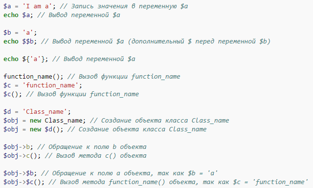

Обращение к переменным осуществляется с помощью символа $, за которым следует имя переменной. Данная конструкция может быть применена также для создания динамических переменных и функций. Например:.

В PHP echo и print не являются функциями (хотя print имеет возвращаемое значение), а являются синтаксическими единицами. При их использовании можно опустить скобки.